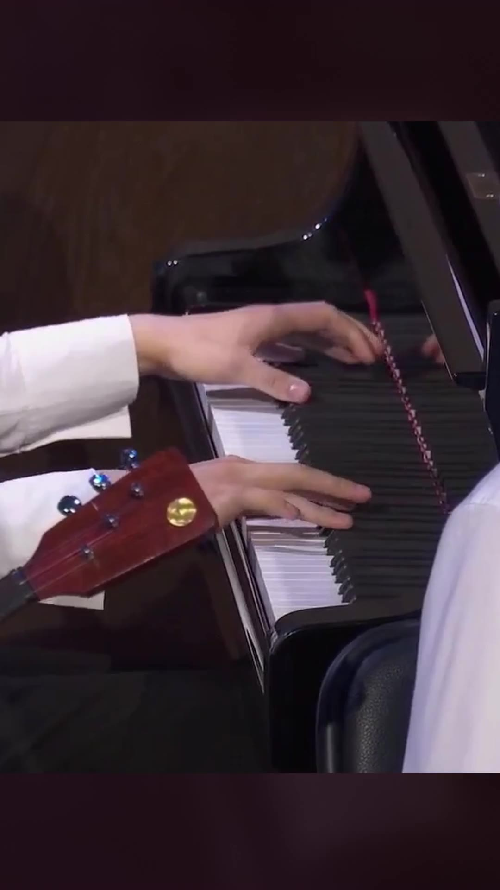
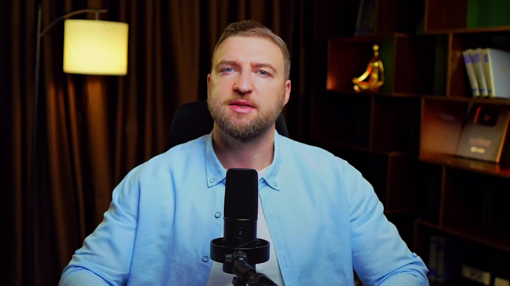
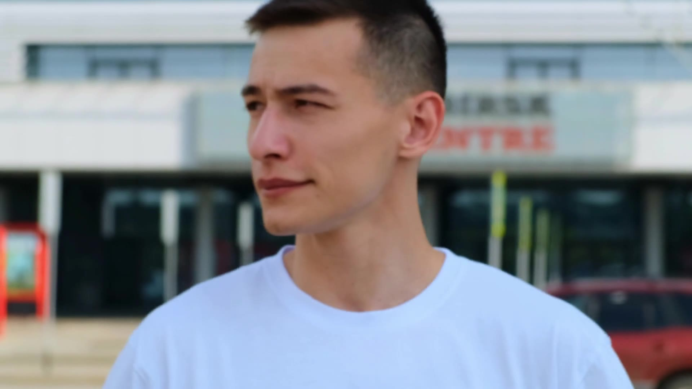
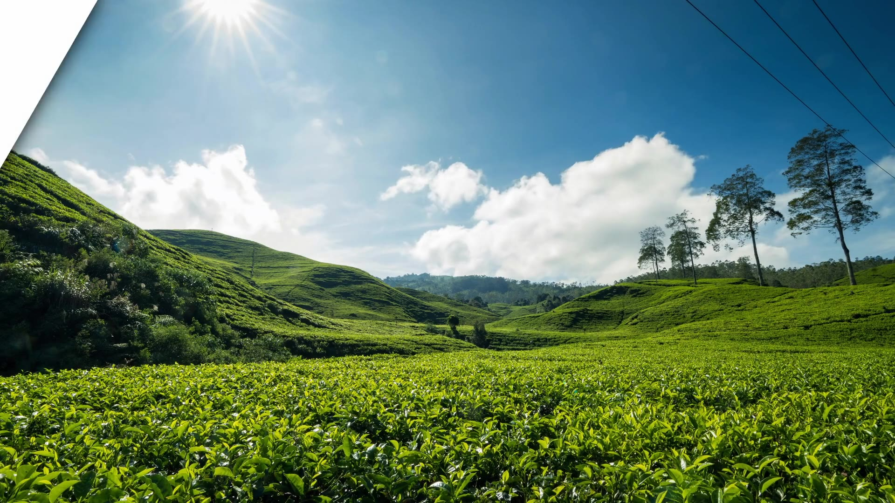

Монтирую видео с 2015 года, с коммерческими проектами работаю с 2021-го: реклама, YouTube-каналы, подкасты, образовательный контент. Не привязан к одной программе — работаю в DaVinci Resolve, Premiere Pro и других, делаю графику и анимацию в Fusion. Подберу подходящий инструмент под вашу задачу.
Отдельно занимаюсь звуком: свожу, чищу и обрабатываю дорожки в Reaper, Ableton, iZotope RX, Adobe Audition, SpectraLayers. Уверен, что хороший звук — это половина восприятия видео, поэтому дополнительно развиваюсь в этом направлении.
Работаю с полным циклом производства: от написания сценария и съёмки до финального рендера.
Базируюсь в Нижнем Новгороде, готов к удалённой работе и долгосрочному сотрудничеству.

Двухминутный вертикальной шорт для VK Клипов из часового концерта.

Монтаж формата «говорящая голова» с цветокоррекцией, чисткой звука и дополнительным визуалом.

Промо-видео и инструкция по использованию приложения.

Рекламный ролик чайных плантаций.
Монтаж видеоконтента для корпоративных клиентов и блогеров: баннер для внутреннего сайта Сбербанка, образовательные курсы для дошкольников, travel-блоги, интервью и подкасты. Полный цикл от монтажа до обработки звука и цветокоррекции.
Монтаж рекламных роликов, репортажей о спортивных мероприятиях, свадебных фильмов. Реклама приложения каршеринга, промо чайных плантаций, корпоративные видео.
Полный цикл производства видеоконтента: написание сценариев, съёмка, монтаж, работа со звуком и музыкой. Съёмка фотографий, создание баннеров и инфографики для сайта, сборка презентаций.